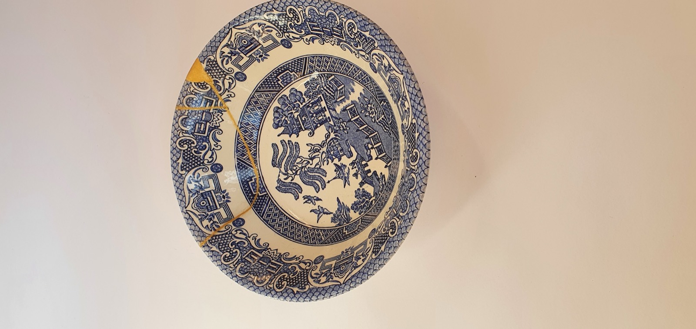

Restoration · Maintenance · Conservation
ElegantRescues
Restoring Memories
About
Placeholder. A short introduction to Elegant Rescues goes here: who you are, your craft, and the care you bring to objects people treasure. Replace this copy later. Like Kintsugi, we treat repair as something worth seeing, mending what is broken with patience and a line of gold.

Services
Placeholder intro. A line about how you approach each commission, for collectors and custodians of valuable pieces. Replace later.
- Metal objects
- Historic buildings
- Ceramics
- Paper
- Furniture
Restoration, maintenance, and conservation across each category.
Workshops
Placeholder. Describe your workshops here: what they cover, who they are for, and how to take part. Replace this copy once details are confirmed.
- Workshop detail one
- Workshop detail two
- Workshop detail three
Dates and booking to be added later.
Gallery
Placeholder gallery. Before-and-after work will appear here.